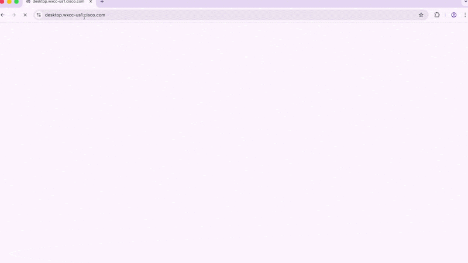
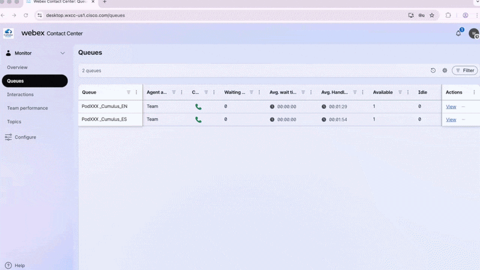
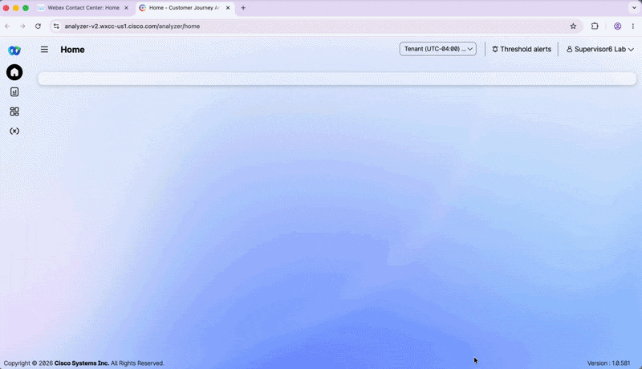
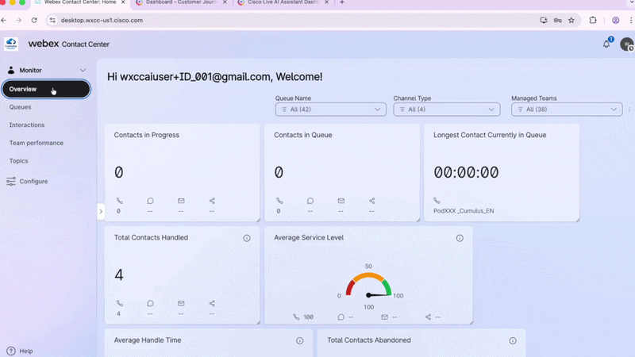
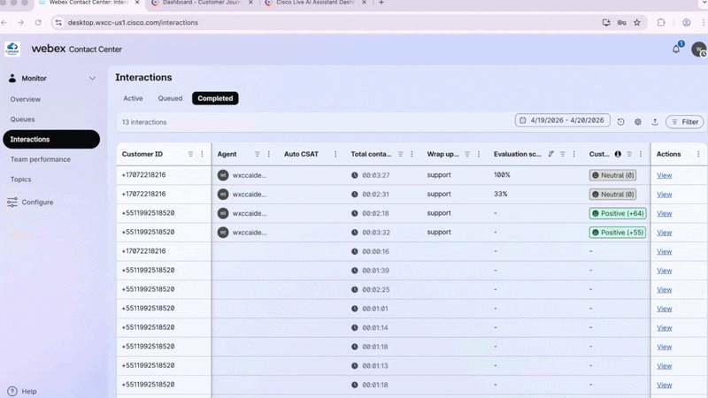
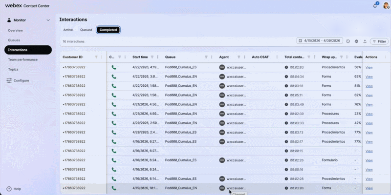
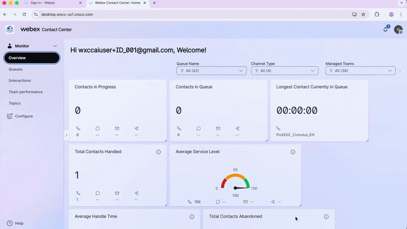
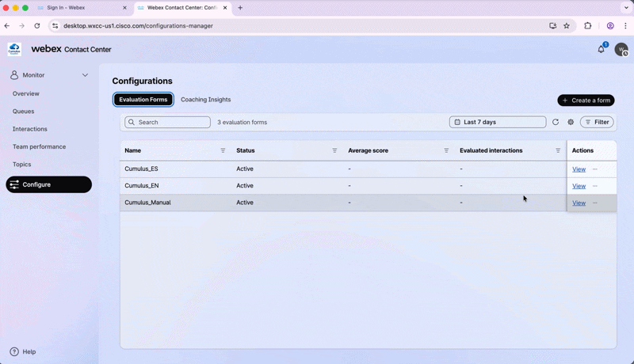
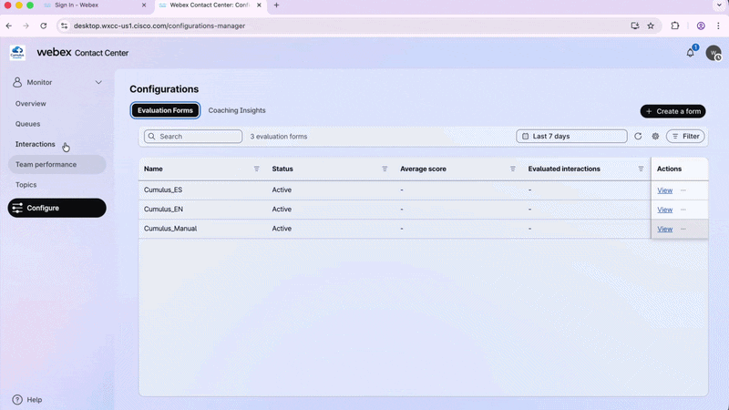
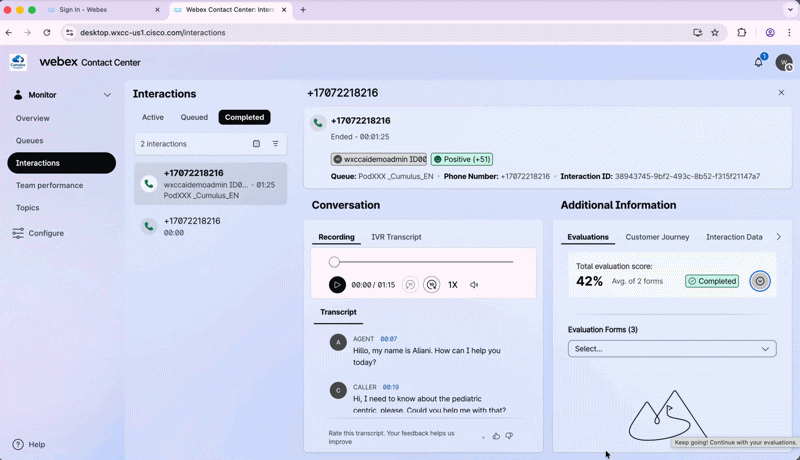

Lab 4 - Bonus: AI Analytics & Quality Management for Supervisors
Section Agenda - 15 Minutes
| # | Task | Duration |
|---|---|---|
| 1 | Phase 1 — Analyzing AI Assistant Dashboard | 5 min |
| 2 | Phase 2 — Analyzing Insights from Interactions with AI Quality Management | 10 min |
Introduction
Now that you have successfully deployed and tested your AI Agent and AI Assistant, it is time to transition into your role as a Supervisor and see the full picture. You will evaluate interactions and analyze performance.
Key Learning
The AI Assistant Dashboard gives you real-time visibility into AI usage and impact.
while AI Quality Management turns every interaction into a coaching opportunity, automatically, in any language, at scale.
The PodID Discipline
Always replace XXX with your assigned 3-digit ID (e.g., 001, 002). Your naming convention must start with the prefix Pod followed by your PodID (PodXXX). If you do not follow this convention exactly, you will overwrite your neighbor's work. Stay disciplined with your naming convention!
Phase 1 — Analyzing AI Assistant Dashboard
1.1 Launch the Supervisor Desktop
- Open Chrome and select the Supervisor_Lab Chrome Profile.
- Navigate to:
https://desktop.wxcc-us1.cisco.com/ -
Log in with your Supervisor POD credentials and confirm:
- Role:
Supervisor - Handle calls using:
Desktop
- Role:
-
Click Save & Continue.
Save Your Password
Save the password on this Chrome Profile to make future logins easier during the lab.
See how to login
{kind=link}

1.2 Explore the Overview Dashboard
- In the left panel, click Monitor → Overview.
- Scroll down and explore the operational KPIs available — Service Level, Handle Time, Queue details, and more.
1.3 Launch Analyzer
- From the Overview Dashboard, click the three dots (⋮) and select Go to Analyzer.
A second Chrome tab will open with the Analyzer tool.
See how to launch Analyzer
{kind=link}

1.4 Run the Cisco Live AI Assistant Dashboard
- In the left panel, navigate to the Dashboard section.
- Locate Cisco Live AI Assistant Dashboard, click the three dots (⋮) and select Run.
- Set the Duration filter to This Week.
You will see all interactions from this lab that had AI Assistant running — Transcription volume, Handle Time, and Calls with Suggested Responses.
See how it works
{kind=link}

Explore the Filters
Filter by TeamName, QueueName, or queue language (EN/ES) to drill down into specific segments. Scroll right to explore all available metrics.
Phase 2 — Analyzing Insights from Interactions with AI Quality Management
1.1 Review Completed Interactions
- Go back to the Supervisor Desktop.
- In the left panel, click Monitor → Interactions → Completed.
New AI QM KPIs
| KPI | Description |
|---|---|
| Evaluation Score | Automated score assigned by AI QM from the interaction transcript |
| Customer Sentiment | AI-detected customer sentiment throughout the interaction |
- Click Actions to customize which KPIs are visible in this panel.
- Filter and sort the columns as needed.
See how it works
{kind=link}

1.2 — View an Individual Interaction (English)
- Select one of your completed interactions and click View.
- Review the full interaction detail: Recording, IVR Transcription, Agent Transcript, and AI QM Evaluation.
See how it works
{kind=link}

1.3 — View an Individual Interaction (Spanish)
- Repeat Step 1.2 selecting a Spanish interaction from the Completed tab.
Early Preview Feature
Non-English evaluation is still an Early Preview feature. Spanish interactions may occasionally show inconsistencies in the AI QM evaluation output.
See how it works
{kind=link}

1.4 — Explore the Evaluation Forms
- In the left panel, navigate to Configure.
-
Three Evaluation Forms were pre-created by the Proctors for this lab:
Form Purpose Cumulus_ENAuto-evaluation for English interactions Cumulus_ESAuto-evaluation for Spanish interactions Cumulus_ManualManual evaluation — no queue assigned -
Select Cumulus_EN and click View.
- Review the evaluation questions, the values per question, and the Form Assignment.
(Spanish queues →Cumulus_ES/ English queues →Cumulus_EN).
How Language is Determined
AI QM uses the Global_Language variable set in the voice flow. There is no
auto-detected language — the variable must be explicitly configured in the flow.
Explore the Spanish Form
Repeat this step selecting Cumulus_ES to review the Spanish evaluation form.
See how it works
{kind=link}

1.5 — Explore the Manual Form
- Still in Configure, click Cumulus_Manual and review this form.
No Queue — No Automation
This form has no queue associated — no automated AI evaluation is performed using it. It is designed exclusively for manual supervisor evaluations.
See how it works
{kind=link}

1.6 — Perform a Manual Evaluation
- Go back to Interactions → Completed and select one interaction. Click View.
- Inside Additional Information, go to Evaluation Forms.
- From the dropdown, select Cumulus_Manual.
- Score each question based on the transcript or recording in the same panel.
- Click Submit.
See how it works
{kind=link}

1.7 — Review the Final Evaluation Score
- Note that this interaction now shows a different Evaluation Score — calculated from 2 evaluations: the Auto Evaluation + your Manual Evaluation.
- Click the Evaluations tab inside Additional Information and expand the arrow to see each score individually.
See how it works
{kind=link}

More AI QM Features Available
Features like Coaching and Sentiment Analysis are also available on this tenant. We are limited on time — but come back next year to explore them together! 😄
🏁 Lab Complete — Congratulations! 🎉
You have successfully completed Bonus Lab – AI Analytics & Quality Management for Supervisors**.
| Component | Status |
|---|---|
| Supervisor Desktop | Launched and Overview Dashboard explored |
| AI Assistant Dashboard | Accessed in Analyzer and explored |
| Completed interactions | Reviewed with AI QM KPIs in English and Spanish |
| Evaluation Forms | Cumulus_EN, Cumulus_ES, and Cumulus_Manual explored |
| Manual evaluation | Performed and combined score reviewed |
Lab authored for Cisco Live 2026